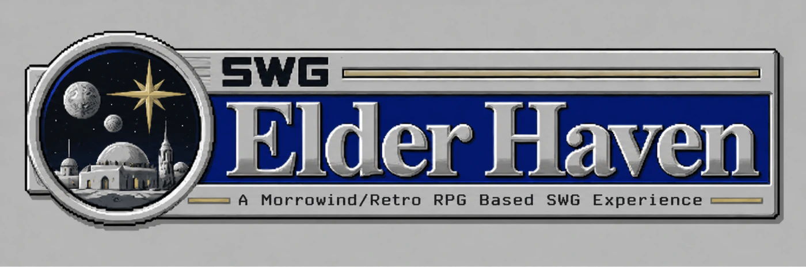

Why Morrowind?
The inspiration is not about copying Morrowind's exact skill system. It is about the same old-school RPG feeling that your character becomes stronger because you live in the world, rather than because a modern MMO checklist handed you a replacement set of numbers. Elder Haven turns ordinary play into long-term character growth.
Starting small
New Insight characters begin around 100 Health / 50 Action / 25 Mind, with modest racial differences. Those low starting values are intentional. Your base attributes are something you build instead of something the server hands you fully formed.
Insight XP
Different kinds of play award different flavors of Insight XP, but they all feed the same progression bar:
- Combat Insight XP from fighting enemies.
- Adventure Insight XP from missions and connected quest stages.
- Survival Insight XP from successful harvesting and survival activity.
- Bounty Hunter Insight XP from completed bounty work.
The game tells you exactly what you earned with messages such as "You gain X Combat Insight XP."
Build your attributes
As Insight levels rise, you earn attribute choices. Each choice can be invested in one of three directions:
- Health: +20 Health, +4 Strength and +4 Constitution.
- Action: +15 Action, +3 Quickness and +3 Stamina.
- Mind: +10 Mind, +2 Focus and +2 Willpower.
You can mix them however you want. A character does not have to follow a predefined HAM template.
Prestige
Your first cycle is completed after 45 earned and spent choices. Prestiging resets the current Insight cycle and its allocated attribute choices, increases your Prestige level and gives the next cycle a higher ceiling.
The choice ceilings progress through 45 → 95 → 145 → 195 → 245…. The early cycles ramp up, while from the fourth cycle onward the total Insight XP cost stays at the same budget even though the attribute ceiling continues to grow.
What Prestige does not erase
Prestige is a character-growth reset, not a wipe. You keep your professions, equipment, quests and Adaptive progression. You are rebuilding your base attributes at a higher long-term ceiling, not deleting the rest of your character.
Insight Journal & Assist Droid
The Insight Journal shows your current level, Prestige, XP remaining until the next level and available choices. When a cycle is complete, visit an Assist Droid to confirm the Prestige. New characters join the system automatically; existing characters can opt in through the Assist Droid while preserving their previous base attributes for safety.